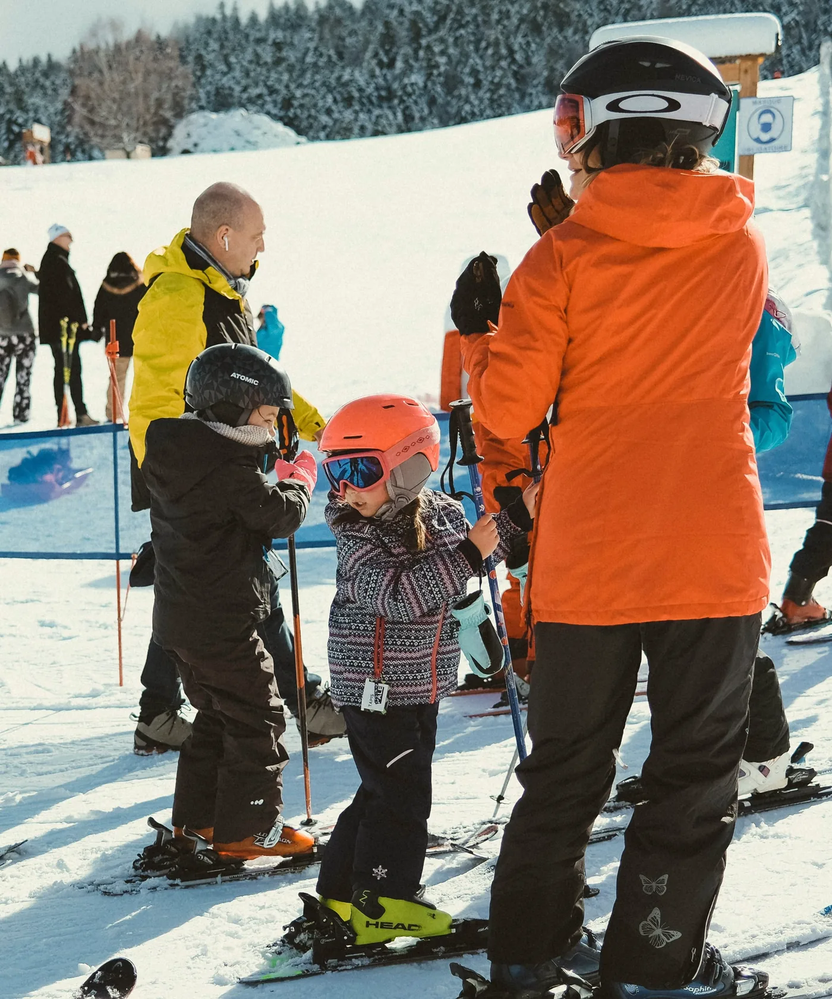

Home / Living in Andorra / Andorra with kids
Andorra with kids
Andorra is small, safe and built for being outdoors, and families moving here face one big decision early on: which of four school systems to choose. This is everything we've gathered for parents, from schools and nurseries to ski clubs, days out and seeing a paediatrician.
At a glance
- School is free in three public systems, taught in Catalan, French or Spanish.
- English-medium teaching is private, from €9,828 a year at the British College.
- Nursery for under 3s costs about €358 to €440 a month for a full day.
- Child benefit needs seven years' residence, so most new arrivals won't qualify.
- Children's sport is huge: more than 6,000 under 18s hold a sports licence.
- In an emergency, call 112, or 116 for an ambulance.
Choosing a school
Andorra runs three free public school systems side by side, Andorran, Spanish and French, and families choose between them. Two private schools teach mainly in English.
| System | Taught in | Leads to | Pupils, 2026–27 | Cost |
|---|---|---|---|---|
| Andorran | Catalan, plus at least one foreign language | The Andorran batxillerat | 4,334, about 40% | Free |
| Spanish | Spanish, with Catalan | The Spanish bachillerato | 3,161, about 29% | Free |
| French | French, with English and Catalan | The French brevet and baccalauréat | 3,149, about 29% | Free |
| English-medium, private | English | IGCSEs and the IB Diploma, or a Spanish baccalaureate at Agora | 296 at the British school, about 3% | Fees |
Provisional Government figures for September 2026, when 10,940 children started the school year.
School is compulsory from 6 to 16, but most children start in the school year they turn 3, in free pre-school classes. The choice of system shapes where a child goes next: the French and Spanish systems lead straight to French and Spanish diplomas and universities, while the Andorran system leads to its own baccalaureate, the batxillerat.
The Andorran system
Taught in Catalan, with seven pre-school and primary schools, in Andorra la Vella, Canillo, Escaldes-Engordany, La Massana, Ordino, Pas de la Casa and Sant Julià de Lòria. Secondary schools are in Santa Coloma, Encamp and Ordino, and there's a single sixth form college, the Escola Andorrana de Batxillerat. Classes are capped at 25, though they can go over to take children who arrive during the year.
The French system
Eleven pre-school and primary schools across the parishes, and one secondary school for everyone, the Lycée Comte de Foix in Andorra la Vella, which had a record 1,654 pupils in 2025–26. Teaching follows French state schools, with English and Catalan compulsory. In December 2025 France and Andorra renewed their education agreement for ten years and agreed to refurbish the lycée.
The Spanish system
The Colegio Español María Moliner in Andorra la Vella, run by the Spanish state, takes children from pre-school to the bachillerato. Three Church run schools also follow the Spanish curriculum and are free, because the Government funds them: Sant Ermengol in Andorra la Vella, 60 years old this October, Mare Janer in Santa Coloma and Sagrada Família in Escaldes-Engordany.
English-medium schools
The British College of Andorra, on the Comella road above Andorra la Vella, teaches the English National Curriculum from Nursery to Year 13, with IGCSEs and, since 2023, the IB Diploma. The British Council accredited it after an inspection in May 2025. Agora Andorra International School, at L'Aldosa in La Massana, part of the Globeducate group, teaches mainly in English from age 2, offers the IB and a Spanish baccalaureate, and has boarding from 9. Agora doesn't publish its fees.
British College fees, 2026–27
| Year group | Age | Fee per year, 2026–27 |
|---|---|---|
| Nursery | 3 | €9,828 |
| Reception | 4 | €10,374 |
| Years 1 and 2 | 5 to 7 | €11,413.50 |
| Years 3 to 6 | 7 to 11 | €13,261.50 |
| Years 7 to 9 | 11 to 14 | €14,574 |
| Years 10 to 13, including the IB Diploma | 14 to 18 | €15,718.50 |
Lunch and snacks are included. On top there's a one-off admission fee of €2,860 and €686 a year for materials, books and insurance, while buses, uniform, the ski programme and exams cost extra. Second and later children get 20% off. The College's fee sheet.
The British College and UK private schools
For British families the natural comparison is a private school at home. This is how it measures up, from the school's own inspection reports and fee sheet.
| British College of Andorra | In England | |
|---|---|---|
| Fees a year | €9,828 to €15,718.50 in 2026–27, lunch included | £18,456 on average for a private day school before 20% VAT (2025), or £49,368 to £52,446 for day pupils at Westminster, with VAT (2026–27) |
| Ages 13 to 18 | About €77,500 for the five years, roughly £65,000 | About £253,000 for the same five years at Westminster |
| Exams | IGCSEs at 16, then the IB Diploma | GCSEs or IGCSEs, then A levels or the IB |
| Results | First IB exams in May 2025, results not published | Sevenoaks averaged 39.8 IB points in 2026, against a world average of 30.58 in 2025 |
| Inspected by | Inspectors for the British Council, most recently in May 2025 | ISI or Ofsted |
| Size | About 296 pupils, day only | Sevenoaks has more than 250 pupils in its IB year alone |
| Class sizes | About 20, up to 23 | 26.1 on average in state primaries, 22.6 in state secondaries |
| Languages | Lessons in English, with Catalan, Spanish and French taught | One foreign language, compulsory from 7 to 14 |
British College figures from its 2026–27 fee sheet and its inspection reports. Class sizes come from school directories, as the school doesn't publish them. UK figures from the ISC census 2025, Westminster, Sevenoaks and the Department for Education. Pounds are approximate.
The school
The British College opened in September 2018 and has grown from 120 pupils in 2021 to 296 this year. In May 2025 it was bought by Forfar Education, a London based group with schools in the UK, Spain and Portugal. The 2021 inspection found every teacher UK qualified, and the 2025 inspection rated teaching very good overall, with some outstanding, called child protection and safer recruitment exemplary and noted high staff retention.
Who's in the class
This is the biggest difference from a school in Britain. In 2025, 45% of pupils were Andorran and 22% Spanish, with the rest from many countries, including Britain and Russia. So it's an international school teaching a British curriculum, and most classmates learn English as a second language. Inspectors rated the school's support for them excellent.
Facilities
The campus sits on a wooded hillside on the Comella road, about ten minutes above the centre of Andorra la Vella, in the old Alberg de la Comella and newer classroom blocks. There's a covered football pitch, a large sports hall and an indoor climbing wall, two science laboratories, an ICT room, primary and secondary libraries, rooms for art, drama, music and Catalan, and a sixth form common room. Lunch is cooked daily in the school's own kitchen, the youngest children have outdoor play areas, and the neighbouring forest is used for outdoor lessons. Every classroom has an interactive screen, and pupils get a laptop from Year 10.
There's no pool or boarding on site. Swimming is taught for one term a year up to Year 9, and Agora in La Massana is the option if you need boarding. It is a small campus beside the big UK schools, but few of them have the Pyrenees on the doorstep: every winter, pupils ski weekly with qualified instructors.
School life
The day runs from about 9am to 4.15pm in primary and 4.30pm in secondary. Clubs are part of the school day, from coding and drama to the Duke of Edinburgh Award, and trips have included the theatre in Barcelona, a castle study in France and Berlin for older pupils.
University fees in the UK
This applies whichever school you choose. To pay home fees at an English university, students normally need to have lived in the UK for the three years before the course starts, and the concession for British families in the EEA or Switzerland doesn't cover Andorra. So a teenager who is still living here in those three years may be charged international fees. Absences that are genuinely temporary, such as a parent's fixed term work contract, can still count, and some universities weigh strong ties and regular visits home. Take advice before you move. House of Commons Library briefing.
Enrolling, and the school year
When to apply
For September 2026, pre-enrolment for children starting school ran from 23 February to 27 March 2026, for every system. You fill in the form for the system you've chosen and hand it in with the enrolment application at the Government's or your parish's tràmits office, or online at e-tràmits. If you arrive mid-year, contact the school or the education ministry: classes can take newcomers above their usual size.
Getting there
The school year started on 9 September in 2026. If you live off the national bus routes and at least 1 km from school, you can apply for a school transport pass, which cost €106.34 a year for one trip a day or €212.68 for two in 2026–27. The Government pays the other 84% or so.
Phones and screens
Phones are banned in classrooms, and the three Andorran secondary schools are getting smart phone lockers from January 2027. In October 2026 the education ministry also banned iPads from primary classrooms after a security audit.
Extra support
In July 2026 the Government approved a new framework for specialist support for children with disabilities in state schools, delivered with the Fundació Privada Nostra Senyora de Meritxell. About 400 pupils receive support.
A note for parents too: new residents now need an A1 Catalan certificate in their first year, and A2 after three years, to renew their residence and work permits. The Government runs free Catalan classes for over 16s. More on the 2026 residency rules.
Nurseries, leave and family support
Nurseries for under 3s, called escoles bressol or llars d'infants, are run by the seven parishes, roughly from four months old until children start pre-school.
| Parish | Full day, per month |
|---|---|
| Escaldes-Engordany | €358, the cheapest, and the same for everyone |
| Andorra la Vella | €512, or about €384 for parish residents |
| Canillo | €387.70 |
| Encamp | €397.30 |
| La Massana | €410 |
| Sant Julià de Lòria | €415.33 |
| Ordino | €440.13 for residents, €490.59 for non-residents |
Andorra la Vella's figure is from its own 2026 price list, and the others from a comparison by Diari d'Andorra in January 2026. Morning only places cost from €216 a month in Escaldes-Engordany to €329.76 in Sant Julià.
Parental leave
Maternity leave is 20 weeks. Leave for the other parent is rising each year: 6 weeks for babies born in 2026, 10 in 2027, 14 in 2028, 17 in 2029 and 20 weeks from 2030. The CASS pays employees 100% of their average salary, if they've been registered for at least six months.
Child benefit
Andorra's child benefit is means tested and needs at least seven years' legal residence, so most families who have just arrived won't qualify. In 2025, 585 families received it, an average of €2,235.73 a year.
After school and holidays
Parishes run after school care and holiday clubs. In Andorra la Vella, the Casal d'Infants El Llamp costs €62 a month plus €92 a year, and holiday weeks €103 with lunch. Encamp's Llaç d'Animació runs until 8.30pm for €37.13 a month, and La Massana has an esplai for ages 3 to 11 in the school holidays.
What it all costs
A June 2025 study backed by UNICEF Andorra put the average cost of raising a child here at €802 a month, rising to €863 for under 3s, when nursery fees are the biggest item.
Clubs and activities
Organised sport is a big part of growing up here. In 2024–25, 6,124 of Andorra's 9,857 sports licences were held by under 18s. Football is the biggest sport, with 2,875 licences, and skiing the biggest individual one, up 40% in a year.
Skiing
Resident children ski cheaply. For 2026–27, school ski days cost €13 a pupil and the subsidised children's season pass €183.73. Encamp's weekend Escola de Neu runs 19 sessions from 9 January to 21 March 2027, €262.80 for residents, and Ordino Arcalís's Màgic Ski club costs from €455 for 13 mornings, lift pass extra.
Swimming
Andorra la Vella's Serradells sports centre runs baby swimming for €91.20 a term, and at Encamp's sports complex a child's day ticket is €5.70. The Palau de Gel in Canillo, with its pool and ice rink, is closed for refurbishment until about September 2027.
Music, drama and art
Andorra la Vella's Conservatori de Música has a music awareness class for ages 3 to 7 at €41.17 a month, with enrolment in February and March. In the north, the Escola de Música de les Valls del Nord teaches ages 4 to 16. The capital's drama and dance school costs €26 to €31 a month and its art school from €23.50.
Summer camps
Andorra la Vella's summer programme has more than 1,600 places for ages 3 to 17, mostly €103 a week with lunch, and is open to children from other parishes a week after residents. MoraBanc Andorra runs a basketball camp in Encamp each July, with places to stay over.
Family days out
Whether you live here or you're visiting, these are the days children ask to repeat.
Sant Julià de Lòria
Naturland
Tobotronc from 1.20 m tall
A mountain adventure park whose Tobotronc alpine coaster winds 5.3 km through the forest, with under 14s riding beside an adult. There are pony rides, a maze, pedal buggies and tubing too. Until 22 November 2026 it opens at weekends only, then daily for the winter from 28 November.
Canillo and El Tarter
Grandvalira in summer
Summer, all ages
Mon(t) Màgic, the summer park at El Forn above Canillo, has the Màgic Gliss toboggan, a zipline, tubing, inflatables and nature trails. In June 2026 Big Jump Park, an 800 m² inflatable zone, opened at El Tarter, and a new maze followed at Soldeu in July.
Escaldes-Engordany
Caldea
Likids from 3, the main spa from 5
The thermal spa has its own supervised children's spa, Likids, for ages 3 to 8, at least 95 cm tall, while parents relax. From 5, children can use all of Caldea Classic with an adult. Take ID for every child.
Canillo
The Tibetan bridge
Under 5s free
A 603 m footbridge up to 158 m above the valley, reached by a free shuttle bus from Canillo. In 2026 tickets cost €14 for children up to 12, or €16 in high summer, and €17 or €19 for adults. Children must be with an adult.
Andorra la Vella
Bici Lab
All ages
A bicycle museum with more than 300 historic bikes, a cycling simulator and a display for children. Nearly half its visitors in 2025 came as families. Open Tuesday to Sunday, 10am to 6pm, for €5.
Andorra la Vella
Parc Central
All ages, free
The capital's biggest green space, about 33,000 m², with play areas for children and teenagers, water features, toilets and a restaurant. Above town, the Els amics de l'Estevet trail in the Obac forest is a loop of under 2 km with wildlife games along the way.
La Massana and Ordino
Skiing with little ones
Under 5s ski free at Pal Arinsal
Pal Arinsal has two snow gardens and two baby clubs, and under 5s ski free with proof of age. At Ordino Arcalís, the nursery takes children from 1 to 3, from €43.95 a half day, and the Kids Program for ages 3 to 11 costs €113.10 a day with lunch, lift pass extra.
On the slopes
Themed runs for children
Winter, for young skiers
Grandvalira has themed trails for children across the resort: Kids Forest at Encamp, Grau Roig and Pas de la Casa, Mon(t) Màgic at El Forn above Canillo, Turbosnow Explorers at El Tarter and Yôkai at Soldeu. Ordino Arcalís turned a former run into an 8.5 km Kids Forest trail, with characters along the way.
Escaldes-Engordany
Rainy days
All ages
Cinemes Illa, a six screen cinema in the Illa Carlemany centre, shows some films in their original language with subtitles. In Ordino, the Casa de la Muntanya has a 3D model of the parish and, since July 2026, virtual reality trips through its landscapes.
For more, see ziplines in Andorra, the easy walks in our hiking guide, your first ski week and our Caldea guide.
Health and safety
Doctors and the hospital
Andorra's only general hospital, Nostra Senyora de Meritxell in Escaldes-Engordany, has paediatrics, a neonatal unit and an emergency department that handled 7,612 children's cases in 2025. Under the CASS, children under 14 are registered with a paediatrician, and the CASS pays 75% of outpatient care and 90% of hospital care at its rates. There are 13 paediatricians with a CASS agreement, in Escaldes-Engordany, Andorra la Vella and Sant Julià, none in the northern or eastern parishes.
If you're visiting
The UK's GHIC and EHIC aren't valid in Andorra, so bring travel insurance that covers medical treatment and mountain rescue. GOV.UK's health advice.
Emergency numbers
112 for any emergency, 116 for an ambulance, 110 for the police and 118 for the fire brigade. Andorra plans to move to 112 alone in spring 2027. The free, confidential helpline for children and young people is 175, open 24 hours.
Safety
Crime is low: police recorded 45 offences per 1,000 people in 2025, down 2.5% on the year before. Selling alcohol to under 18s is a criminal offence, and the minimum age for clubs and bars with dancing is 16. More in is Andorra safe?
Questions people ask
Is there a British school in Andorra?
Yes. The British College of Andorra, in Andorra la Vella, teaches the English National Curriculum from age 3 to 18, with IGCSEs and the IB Diploma, and was accredited by the British Council in 2025. Fees for 2026–27 run from €9,828 to €15,718.50 a year. Agora Andorra International School in La Massana also teaches mainly in English, from age 2.
How does the British College of Andorra compare with UK private schools?
It teaches the same English curriculum, with IGCSEs and then the IB Diploma, for a fraction of the price: €9,828 to €15,718.50 a year in 2026–27, against an average of £18,456 plus VAT for a UK private day school. Its 2025 inspection rated teaching very good overall, with some outstanding. It is much smaller than the big UK schools, day only, and has not yet published exam results.
Will my child pay home fees at a UK university if we live in Andorra?
Not necessarily. Home fees at English universities normally need three years' ordinary residence in the UK before the course starts, and the concession for British families in the EEA or Switzerland doesn't cover Andorra. Genuinely temporary absences, such as a parent's fixed term work contract, can still count, so take advice before you move.
Is school free in Andorra?
Yes. All three public systems, Andorran, French and Spanish, are free, including the three Church run schools that follow the Spanish curriculum, which the Government funds. Only the private schools charge fees.
What language are schools in Andorra taught in?
The Andorran system teaches in Catalan, the French system in French and the Spanish system in Spanish. The two private schools teach mainly in English. Most children here grow up speaking several languages.
How much does nursery cost in Andorra?
Parish nurseries for under 3s cost about €358 to €440 a month for a full day in 2026, depending on the parish. Escaldes-Engordany is the cheapest, and Andorra la Vella gives parish residents 25% off.
Is Andorra a good place to raise children?
For many families, yes. Crime is low, the mountains are on the doorstep, schooling is free in three languages and children's sport is well organised. The costs to plan for are housing, nursery fees for under 3s and, if you want English-medium teaching, private school fees.
Checked October 2026 against Government of Andorra figures, the schools' own websites and fee sheets, the parishes' 2026 price lists, the CASS, the resorts and attractions, and Andorran press. Fees, dates and rules change every school year, so confirm with the school or parish before you rely on them.
More family days out

Outdoors
Ziplines in Andorra: the longest, the fastest and the best for children, with 2026 prices
The new 625 m Eclipse, a line 40 m above a mountain lake, a twisting ride through the forest, and the ones small children can do.
6 min read
Ski and winter
Dog sledding in Andorra: who runs it, what it costs, and the welfare questions to ask
Two husky operators high on the Envalira pass, from €56 a ride, and the welfare questions worth asking before you book.
4 min read
Food
Sweet treats in Andorra: ice cream, crêpes, hot chocolate and late-night bites
Artisan gelato, a crêperie so popular the police managed its queues, thick xocolata desfeta and a bean to bar chocolate factory.
5 min read


Also in the Journal: schools in Andorra, sledging for families, Naturland and the Tobotronc, family ski holidays, school ski trips, a first ski week and picnic areas.